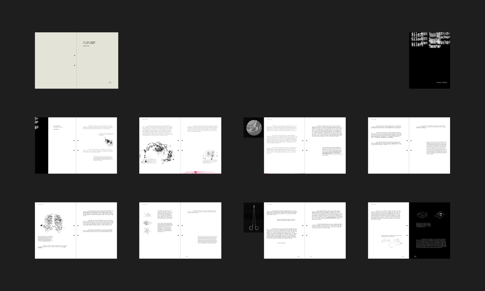
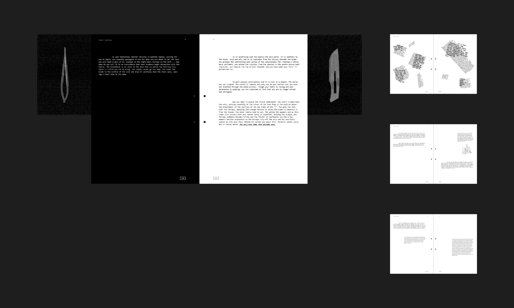
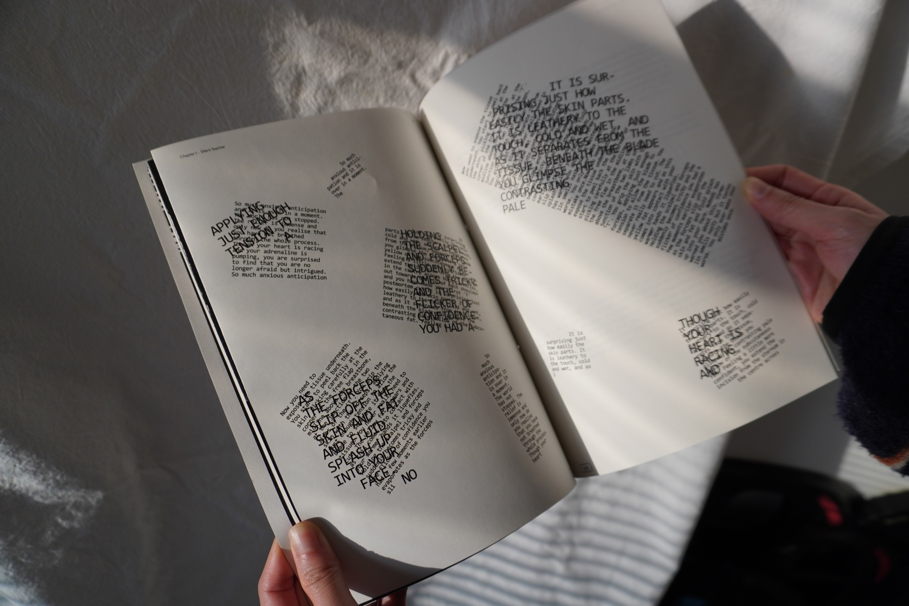

Margin Notes: Margin Notes is a typographic and editorial exploration inspired by Sue Black's
All That Remains: A Life in Death, which weaves memoir with forensic science to reflect on life, death, and the stories human remains tell. Drawing from the chapter “Silent Teacher,” the project honors cadavers as invaluable educators in medicine and acknowledges the generosity of body donors.
The book integrates fold-out spreads within the page structure to visualize medical tools referenced in the text, extending reading into a tactile and spatial experience. Numerical tags are introduced as recurring visual markers, appearing where cadavers are first mentioned and continuing throughout the book to suggest memory, presence, and quiet continuity.



